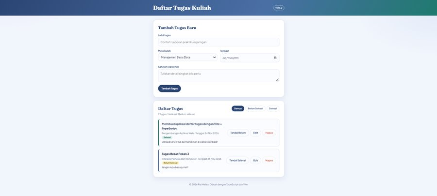

Buka aplikasi Daftar Tugas Kuliah (membuka tab baru)Aplikasi Daftar Tugas Kuliah
Aplikasi untuk menambah, mengedit, menghapus, dan memantau status tugas kuliah.
Teknologi yang saya gunakan
- Git & GitHub
- Mencatat riwayat kode lewat commit dan branch, lalu digabung melalui Pull Request. Konflik diselesaikan sebelum merge.
- npm
- Mengelola paket dan skrip (
dev,build) lewatpackage.json. - TypeScript
- JavaScript dengan tipe data, sehingga kesalahan terdeteksi sebelum aplikasi berjalan.
- Vite
- Menyediakan server pengembangan yang cepat dan membuat build produksi.
- Variabel lingkungan
- Nama dan versi aplikasi dibaca dari
.envyang tidak diunggah ke GitHub. Tidak ada data rahasia. - Compiler, transpiler, bundler
tscmemeriksa tipe, esbuild mengubah TypeScript menjadi JavaScript, dan Rollup menggabungkan modul menjadi file ringan.